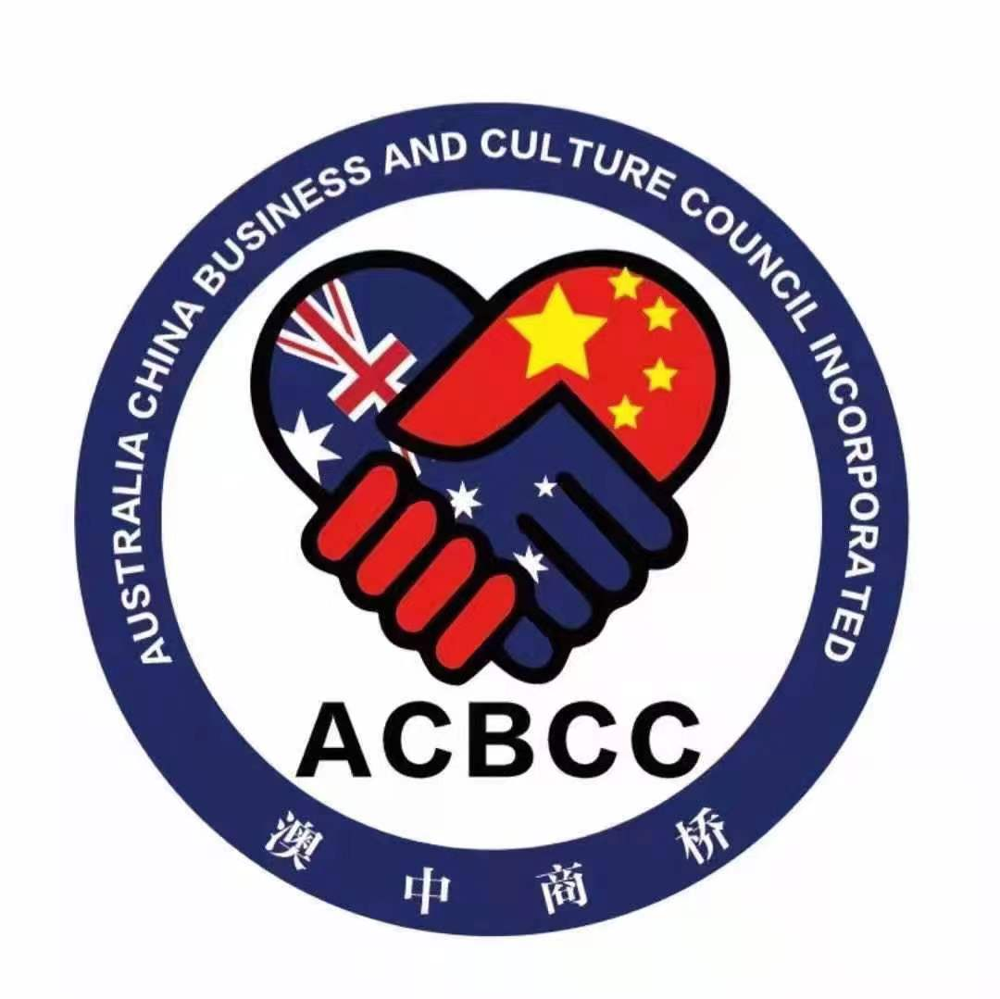
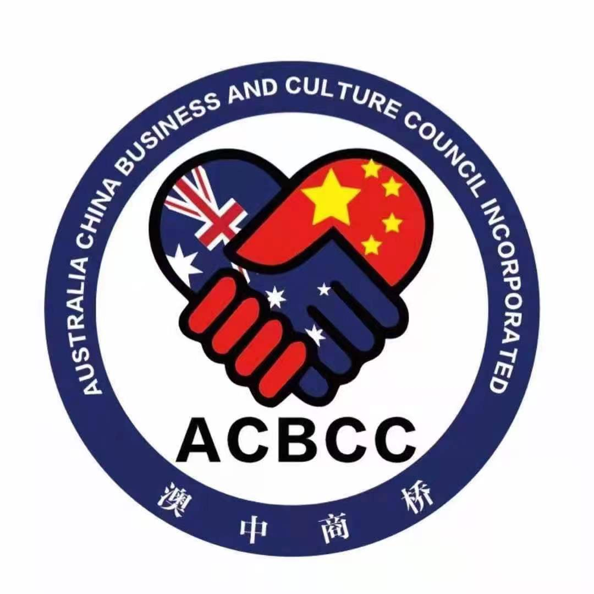

Monica Yang 杨绮雯 
灌装生产及品牌定制规划师 | 葡萄酒资深出口流程顾问 | WSET中级认证品酒师
Wine Production Planner & Brand Solutions Advisor | Senior Wine Export Consultant |
WSET Level 2 Award in Wines
Company Name (公司名称): Kurmay International Pty Ltd 科美国际有限公司
Contact Number (联系电话): +61 4 33332538
E-mail (电子邮件): monica.yang@kmiwines.com.au
Address (地址): Level 2 14-16 Prospect St, Box Hill, VIC 3128
Business Scope (业务范围)
- Wine Production Planning 葡萄酒生产规划
- Custom Branding for Wine & Non-Alcoholic Beverages 葡萄酒及非酒精类饮品品牌定制
- Wine Industry Resource Integration & Partnership Development 葡萄酒行业资源整合与合作拓展
- Wine Industry Training & Knowledge Dissemination 葡萄酒行业培训与知识普及
- Wine Export Sales 葡萄酒出口销售
- Wine Export Process Consulting 葡萄酒出口流程咨询
- Wine Tasting Event Planning & Execution 品酒会策划与执行
战略合作伙伴及酒庄
- Australian China Business and Culture Council Incorporative (ACBCC)
Promoting business cooperation and cultural understanding between Australia and China, with a focus on bilateral growth and partnership development.
- IDL – Geelong, Victoria
A leading Australian provider of entry-level and premium beverage solutions, including wine and RTD products.
- Santa & D’Sas – Heathcote and King Valley, Victoria
Boutique winery known for its exceptional Heathcote Shiraz and elegant cool-climate wines, showcasing both bold Australian reds and Italian varietals.
- Wynns Coonawarra Estate - Coonawarra, South Australia
Iconic winery celebrated for its exceptional Cabernet Sauvignon, crafted from the renowned terra rossa soils of Coonawarra.
 Patritti – McLaren Vale, South Australia
Patritti – McLaren Vale, South Australia
Iconic producer of Australia's traditional and non-alcoholic wines, specializing in premium handcrafted wines and fruit juices.
- Geoff Hardy K1 Wine– Adelaide Hill, South Australia
Renowned for its cool-climate wines, producing award-winning, premium varietals with a focus on sustainability.
WSET Level 2 Award in Wines
Company Name (公司名称): Kurmay International Pty Ltd 科美国际有限公司
Contact Number (联系电话): +61 4 33332538
E-mail (电子邮件): monica.yang@kmiwines.com.au
Address (地址): Level 2 14-16 Prospect St, Box Hill, VIC 3128
- Wine Production Planning 葡萄酒生产规划
- Custom Branding for Wine & Non-Alcoholic Beverages 葡萄酒及非酒精类饮品品牌定制
- Wine Industry Resource Integration & Partnership Development 葡萄酒行业资源整合与合作拓展
- Wine Industry Training & Knowledge Dissemination 葡萄酒行业培训与知识普及
- Wine Export Sales 葡萄酒出口销售
- Wine Export Process Consulting 葡萄酒出口流程咨询
- Wine Tasting Event Planning & Execution 品酒会策划与执行
- Australian China Business and Culture Council Incorporative (ACBCC)
Promoting business cooperation and cultural understanding between Australia and China, with a focus on bilateral growth and partnership development. - IDL – Geelong, Victoria
A leading Australian provider of entry-level and premium beverage solutions, including wine and RTD products. - Santa & D’Sas – Heathcote and King Valley, Victoria
Boutique winery known for its exceptional Heathcote Shiraz and elegant cool-climate wines, showcasing both bold Australian reds and Italian varietals. - Wynns Coonawarra Estate - Coonawarra, South Australia
Iconic winery celebrated for its exceptional Cabernet Sauvignon, crafted from the renowned terra rossa soils of Coonawarra. - Patritti – McLaren Vale, South Australia
Iconic producer of Australia's traditional and non-alcoholic wines, specializing in premium handcrafted wines and fruit juices. - Geoff Hardy K1 Wine– Adelaide Hill, South Australia
Renowned for its cool-climate wines, producing award-winning, premium varietals with a focus on sustainability.